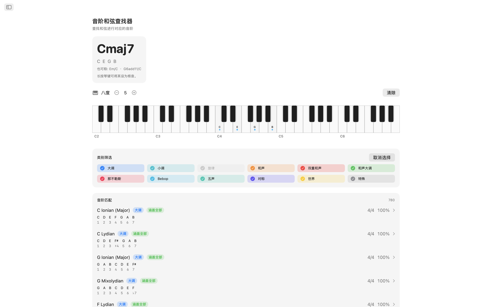
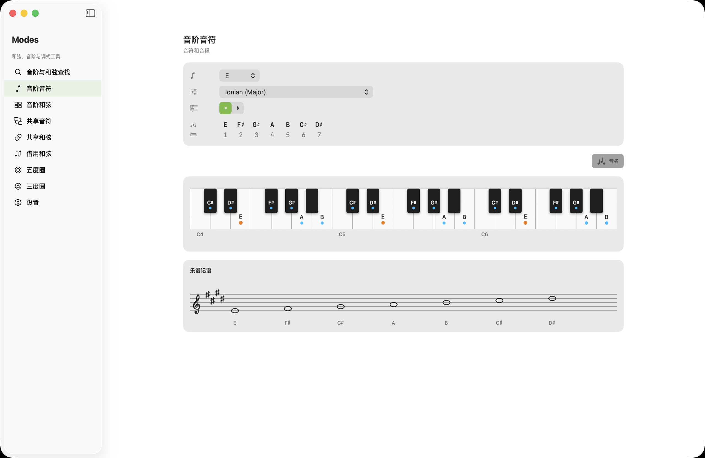
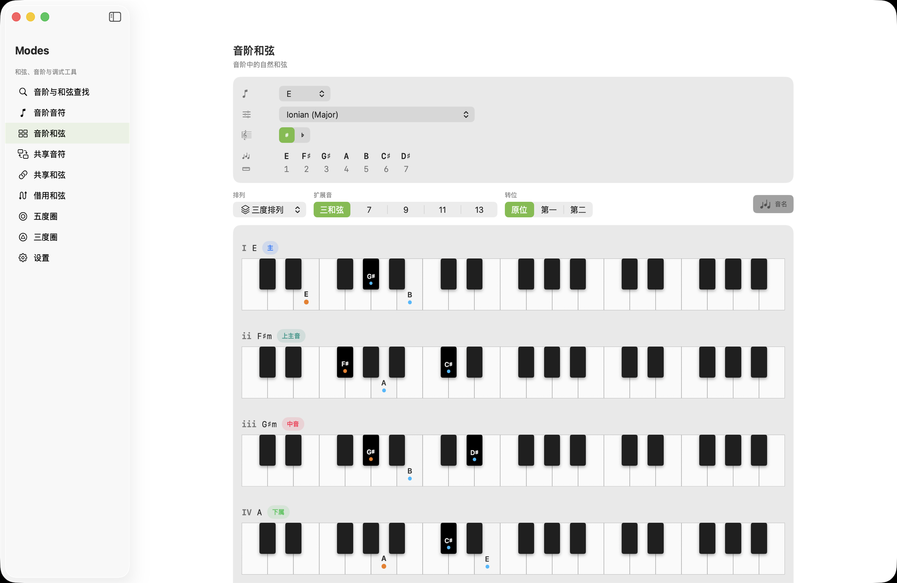
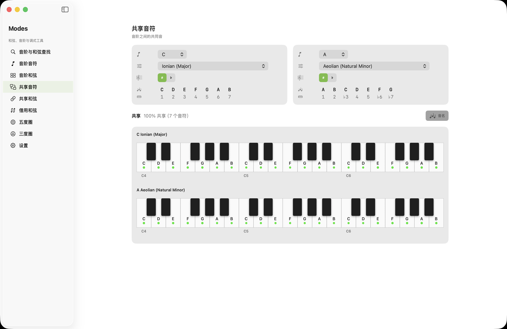
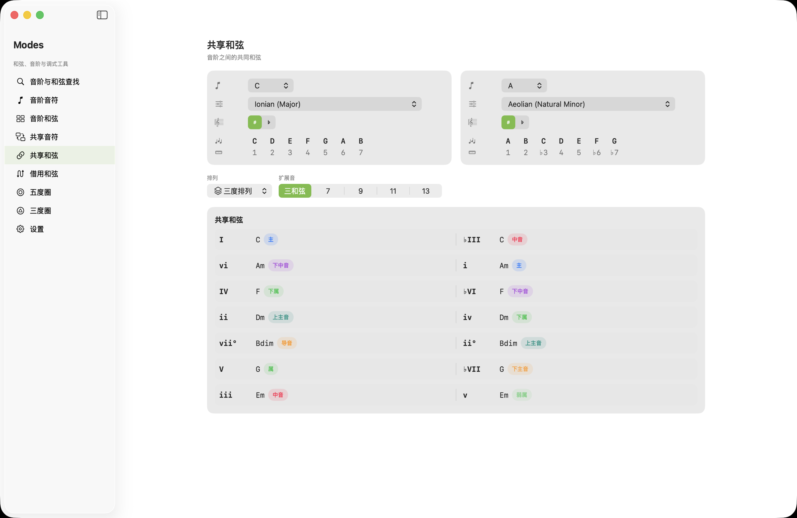
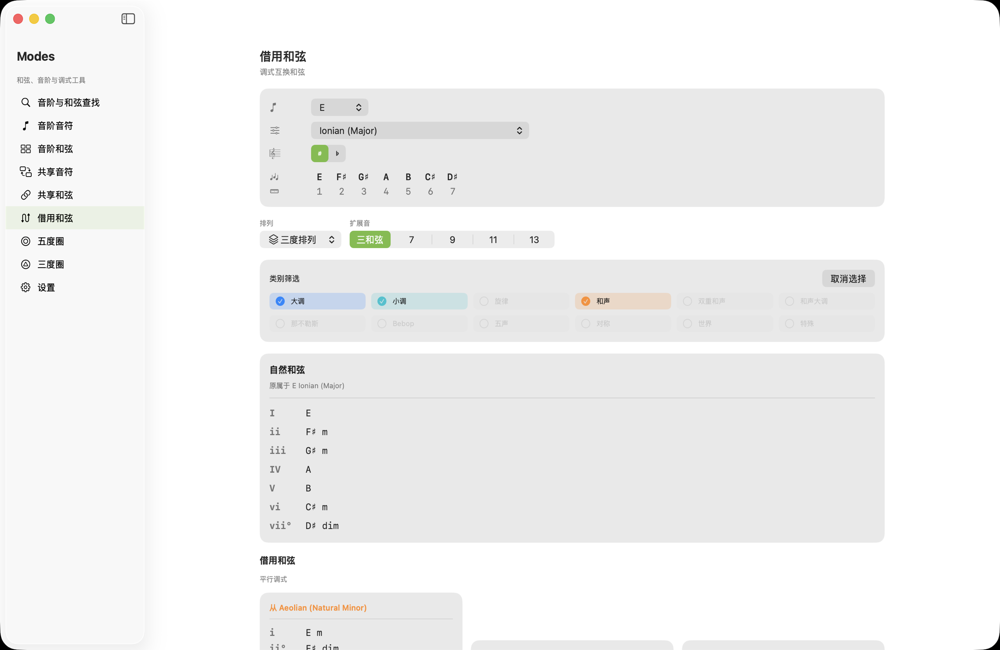
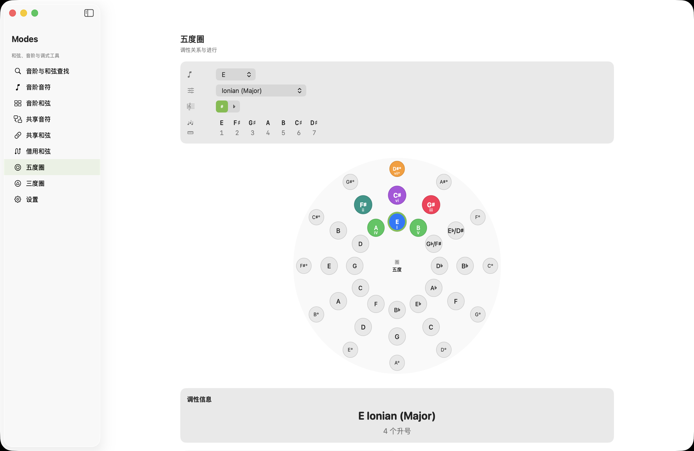
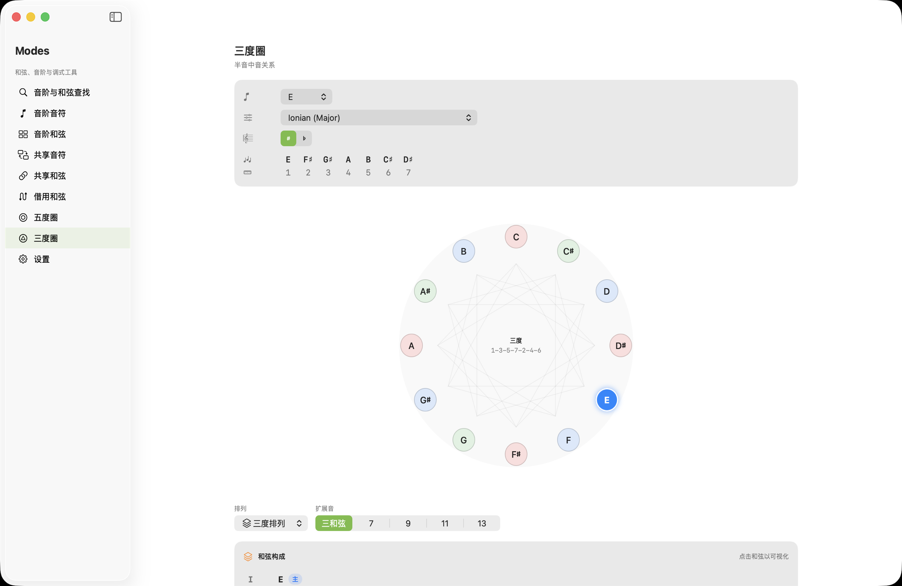
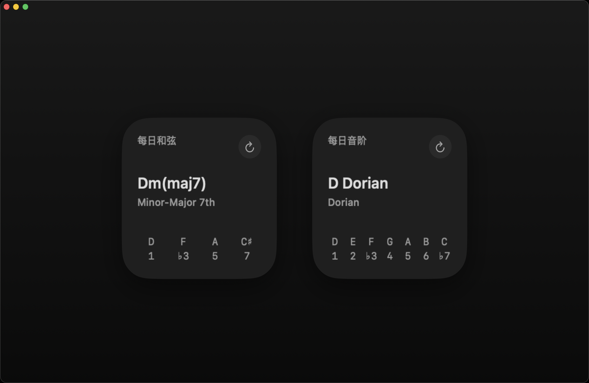
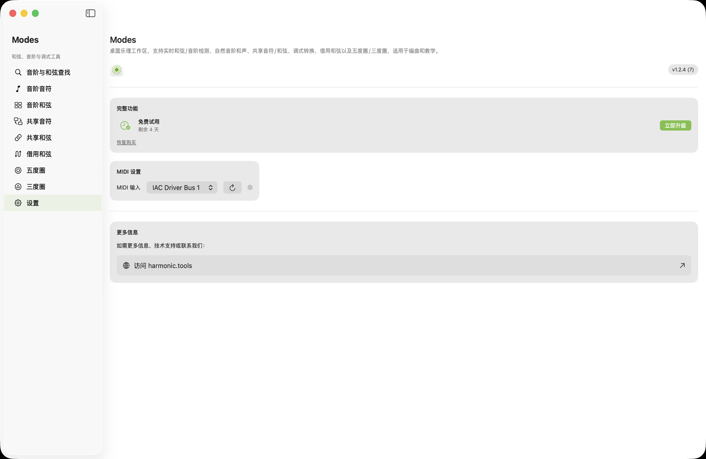

Modes macOS版
适用于macOS的互动乐理实验室。无论您是在创作歌曲、备课还是探索新的和声领域，Modes都能让您即时访问音阶、和弦、声部排列和转调路径，集于一个简洁的侧边栏导航应用中，与您的DAW并排使用。现已支持Siri、Shortcuts、Spotlight搜索和通知中心小组件。
- 音阶与和弦查找器，支持MIDI + 屏幕键盘
- 65种音阶 · 21种和弦类型 · 8种声部排列族
- 共同音符、共同和弦、离调和弦
- 互动五度圈 + 三度圈
- Siri、Shortcuts、Spotlight与通知中心小组件
截图
包含随网站主题切换的浅色和深色截图。












功能特色
- 音阶与和弦查找器：在互动多八度键盘上弹奏音符或连接MIDI控制器。Modes可实时识别您演奏的和弦：大调、小调、减和弦、增和弦、延伸和弦、挂留和弦等。它按音符覆盖率对每个匹配的音阶进行排名。按音阶类别（自然音阶、旋律小调、和声小调、五声音阶、Bebop、对称、世界音阶等）筛选结果，精准锁定您想要的音色。
- 65种音阶与调式：从七种自然调式到旋律小调、和声小调、双重和声、那不勒斯、Bebop、五声、蓝调、全音、减音、增音以及世界音阶如Hirajōshi、Kumoi、In Sen、Persian和Enigmatic。每种音阶都标注了音程符号并在键盘上高亮显示。
- 调内音符：选择任意根音和音阶，查看在两个八度上高亮显示的每个调内音符。即时可视化哪些音符属于该调以及根音的位置。
- 音阶和弦：为您选择的音阶的每个音级生成自然三和弦或七和弦。查看罗马数字、和弦名称、和声功能标签（主功能、下属功能、属功能及30+详细标签）和声部排列键盘展示，方便比较。
- 8种声部排列：以三度叠置、sus2、sus4、六度、附加、四度叠置、五度叠置和强力和弦构建和弦。从三和弦到十三和弦可选，每个延伸音自动标注。
- 共同音符与共同和弦：并排比较任意两个调。查看哪些音符重叠、哪些独有、哪些和弦两个调共享。这对于平滑转调和重新和声编配至关重要。
- 离调和弦：分析您的调内自然和弦以及来自平行调式的所有可借用选项，按来源调式分组。在不离开调性中心的情况下发现新鲜的和声色彩。
- 五度圈：互动双环圆（外圈大调，内圈自然小调）。点击扇区可重新设定调性。一目了然地查看属、下属、关系调、平行调和相近调关系，带有转调难度标签和调号详情。
- 三度圈：在减音程循环图上探索半音中间音关系。每个音级的大调和小调按钮显示中间音、关系调和平行调连接。非常适合电影配乐和新里曼转调规划。
- MIDI支持：连接任何符合标准的MIDI键盘或控制器。演奏的音符与屏幕点击无缝融合进行识别。
- Siri、Shortcuts与Spotlight：让Siri或运行Shortcut来显示音阶的音符、列出某个调的和弦、识别音阶或和弦、拼出和弦、查找两个音符之间的音程、移调音符，或打开五度圈和离调和弦。音阶和和弦已在Spotlight中编入索引，因此您可以直接从Spotlight搜索它们。
- 通知中心小组件：将每日音阶和每日和弦小组件添加到通知中心，每天获取一份乐理知识。
专为桌面打造
- 完全离线运行——无需账户、无广告、无追踪
- 原生macOS应用，侧边栏导航
- 深色模式感知界面，跟随系统外观
- 等音记谱：自动、升号或降号
- 可调整窗口大小——与DAW并排使用
无论您是勾画和弦进行的制作人、学习调式的吉他手、研究爵士和声的钢琴家还是备考乐理的学生，Modes都将深入的乐理知识呈现在您的桌面上。
乐理覆盖范围
应用内所有可用音阶、调式、和弦、声部排列、音程与和声工具的完整参考，并附上每一项背后精确的音符公式。
音阶与调式 共65种
每个音阶都以音程记号标注，并在键盘上高亮显示，支持自动、升号或降号的等音记谱。
大调调式（自然音阶）
| Ionian (Major) | 1 2 3 4 5 6 7 |
| Dorian | 1 2 ♭3 4 5 6 ♭7 |
| Phrygian | 1 ♭2 ♭3 4 5 ♭6 ♭7 |
| Lydian | 1 2 3 ♯4 5 6 7 |
| Mixolydian | 1 2 3 4 5 6 ♭7 |
| Aeolian (Natural Minor) | 1 2 ♭3 4 5 ♭6 ♭7 |
| Locrian | 1 ♭2 ♭3 4 ♭5 ♭6 ♭7 |
旋律小调（爵士小调）调式
| Melodic Minor (Jazz Minor) | 1 2 ♭3 4 5 6 7 |
| Dorian ♭2 (Phrygian ♮6) | 1 ♭2 ♭3 4 5 6 ♭7 |
| Lydian Augmented (Lydian ♯5) | 1 2 3 ♯4 ♯5 6 7 |
| Lydian Dominant (Lydian ♭7) | 1 2 3 ♯4 5 6 ♭7 |
| Mixolydian ♭6 (Aeolian Dominant) | 1 2 3 4 5 ♭6 ♭7 |
| Locrian ♯2 (Locrian ♮2) | 1 2 ♭3 4 ♭5 ♭6 ♭7 |
| Altered (Super-Locrian) | 1 ♭2 ♭3 ♭4 ♭5 ♭6 ♭7 |
和声小调调式
| Harmonic Minor | 1 2 ♭3 4 5 ♭6 7 |
| Locrian ♮6 | 1 ♭2 ♭3 4 ♭5 6 ♭7 |
| Ionian ♯5 (Augmented Major) | 1 2 3 4 ♯5 6 7 |
| Dorian ♯4 (Ukrainian Dorian) | 1 2 ♭3 ♯4 5 6 ♭7 |
| Phrygian Dominant | 1 ♭2 3 4 5 ♭6 ♭7 |
| Lydian ♯2 | 1 ♯2 3 ♯4 5 6 7 |
| Super Locrian ♭♭7 (Altered ♭♭7) | 1 ♭2 ♭3 ♭4 ♭5 ♭6 ♭♭7 |
双重和声小调（匈牙利小调）调式
| Hungarian Minor (Double Harmonic Minor) | 1 2 ♭3 ♯4 5 ♭6 7 |
| Oriental (Mode 2) | 1 ♭2 3 4 ♭5 6 ♭7 |
| Ionian ♯2 ♯5 | 1 ♯2 3 4 ♯5 6 7 |
| Locrian ♭♭3 ♭♭7 | 1 ♭2 ♭♭3 4 ♭5 ♭6 ♭♭7 |
| Double Harmonic Major | 1 ♭2 3 4 5 ♭6 7 |
| Lydian ♯2 ♯6 | 1 ♯2 3 ♯4 5 ♯6 7 |
| Ultraphrygian | 1 ♭2 ♭3 ♭4 5 ♭6 ♭♭7 |
和声大调
| Harmonic Major (Ionian ♭6) | 1 2 3 4 5 ♭6 7 |
| Double Harmonic Major (Byzantine) | 1 ♭2 3 4 5 ♭6 7 |
那不勒斯小调调式
| Neapolitan Minor | 1 ♭2 ♭3 4 5 ♭6 7 |
| Lydian ♯6 | 1 2 3 ♯4 5 ♯6 7 |
| Mixolydian Augmented | 1 2 3 4 ♯5 6 ♭7 |
| Romani Minor (Aeolian ♯4) | 1 2 ♭3 ♯4 5 ♭6 ♭7 |
| Locrian Dominant | 1 ♭2 3 4 ♭5 ♭6 ♭7 |
| Ionian ♯2 | 1 ♯2 3 4 5 6 7 |
| Ultralocrian | 1 ♭2 ♭♭3 ♭4 ♭5 ♭6 ♭♭7 |
那不勒斯大调调式
| Neapolitan Major | 1 ♭2 ♭3 4 5 6 7 |
| Leading Whole Tone (Lydian Augmented ♯6) | 1 2 3 ♯4 ♯5 ♯6 7 |
| Lydian Augmented Dominant | 1 2 3 ♯4 ♯5 6 ♭7 |
| Lydian Dominant ♭6 | 1 2 3 ♯4 5 ♭6 ♭7 |
| Major Locrian | 1 2 3 4 ♭5 ♭6 ♭7 |
| Half-Diminished ♭4 (Altered Dominant ♯2) | 1 2 ♭3 ♭4 ♭5 ♭6 ♭7 |
| Altered Dominant ♭♭3 | 1 ♭2 ♭♭3 ♭4 ♭5 ♭6 ♭7 |
Bebop
| Bebop Dominant | 1 2 3 4 5 6 ♭7 7 |
| Bebop Major | 1 2 3 4 5 ♭6 6 7 |
五声与蓝调
| Pentatonic Major | 1 2 3 5 6 |
| Pentatonic Suspended (Egyptian) | 1 2 4 5 ♭7 |
| Pentatonic Blues Minor (Man Gong) | 1 ♭3 4 ♭6 ♭7 |
| Pentatonic Blues Major (Yo) | 1 2 4 5 6 |
| Pentatonic Minor | 1 ♭3 4 5 ♭7 |
| Pentatonic Japanese (In) | 1 ♭2 4 5 ♭6 |
| Blues | 1 ♭3 4 ♭5 5 ♭7 |
| Blues (Major) | 1 2 ♭3 3 5 6 |
对称与合成
| Whole Tone | 1 2 3 ♯4 ♯5 ♭7 |
| Diminished (Half–Whole) | 1 ♭2 ♭3 3 ♭5 5 6 ♭7 |
| Diminished (Whole–Half) | 1 2 ♭3 4 ♭5 ♭6 6 7 |
| Augmented (Hexatonic) | 1 ♭3 3 5 ♯5 7 |
| Prometheus (Mystic Hexatonic) | 1 2 3 ♯4 6 ♭7 |
日本五声音阶
| Hirajōshi | 1 2 ♭3 5 ♭6 |
| Kumoi | 1 2 ♭3 5 6 |
| In Sen | 1 ♭2 4 5 ♭7 |
| Iwato | 1 ♭2 4 ♭5 ♭7 |
世界 / 其他
| Persian | 1 ♭2 3 4 ♭5 ♭6 7 |
| Enigmatic | 1 ♭2 3 ♯4 ♯5 ♯6 7 |
和弦
可识别和弦类型 21种
和弦根据你弹奏的音符识别，并自动附加九度、十一度和十三度张力音（无七音时显示为 add9、add11、add13）。当最低音位于和弦下方时，会被视为低音并显示为斜杠和弦（例如 C/E）。
| 和弦 | 记号 | 音程 |
|---|---|---|
| Major | — | 1 3 5 |
| Minor | m | 1 ♭3 5 |
| Diminished | dim | 1 ♭3 ♭5 |
| Augmented | aug | 1 3 ♯5 |
| Suspended 2nd | sus2 | 1 2 5 |
| Suspended 4th | sus4 | 1 4 5 |
| Power Chord | 5 | 1 5 |
| Major 6th | 6 | 1 3 5 6 |
| Minor 6th | m6 | 1 ♭3 5 6 |
| Dominant 7th | 7 | 1 3 5 ♭7 |
| Major 7th | maj7 | 1 3 5 7 |
| Minor 7th | m7 | 1 ♭3 5 ♭7 |
| Half-Diminished 7th | m7♭5 | 1 ♭3 ♭5 ♭7 |
| Diminished 7th | dim7 | 1 ♭3 ♭5 ♭♭7 |
| Minor-Major 7th | m(maj7) | 1 ♭3 5 7 |
| Augmented 7th | aug7 | 1 3 ♯5 ♭7 |
| Augmented Major 7th | aug(maj7) | 1 3 ♯5 7 |
| Major (♭5) | (♭5) | 1 3 ♭5 |
| Diminished (♭♭3) | dim(♭♭3) | 1 ♭♭3 ♭5 |
| Dominant 7sus4 | 7sus4 | 1 4 5 ♭7 |
| Dominant 7sus2 | 7sus2 | 1 2 5 ♭7 |
和弦性质（构建器） 6种
构建器中可用的和弦性质，含罗马数字分析。
| 性质 | 记号 | 罗马数字 |
|---|---|---|
| Major | — | Uppercase (I, IV, V…) |
| Minor | m | Lowercase (ii, iii, vi…) |
| Diminished | ° | Lowercase + ° (vii°) |
| Augmented | + | Uppercase + + (III+) |
| Major (♭5) | (♭5) | Uppercase + (♭5) |
| Diminished (♭♭3) | °(♭♭3) | Lowercase + °(♭♭3) |
和弦声部排列 8种
每个和弦都可以用八种方式排列，从三度叠置（tertian）到四度叠置和五度叠置。
| 排列方式 | 规模 | 说明 |
|---|---|---|
| Tertian | Triad, 7th, 9th, 11th, 13th | Standard stacked-thirds voicings |
| sus2 | Triad, 7th | Replaces the 3rd with the 2nd |
| sus4 | Triad, 7th | Replaces the 3rd with the 4th |
| 6th | 6th, 6/9 | Adds the 6th (and optionally 9th) |
| Add | add9, add11 | Adds a tone without the 7th |
| Quartal | 3-note, 4-note | Built in stacked 4ths |
| Quintal | 3-note, 4-note | Built in stacked 5ths |
| Power | 2-note | Root + 5th only |
和弦规模
| 规模 | 标签 | 音数 |
|---|---|---|
| Power | 5 | 2 |
| Triad | Triad | 3 |
| Sixth | 6 | 4 |
| Six-Nine | 6/9 | 5 |
| Seventh | 7 | 4 |
| Ninth | 9 | 5 |
| Eleventh | 11 | 6 |
| Thirteenth | 13 | 7 |
| Add 9 | add9 | 4 |
| Add 11 | add11 | 4 |
| Quartal 4-note | 4×4 | 4 |
| Quintal 4-note | 5×4 | 4 |
音程 12个半音
每个半音音程及其转位。
| 半音数 | 音程 | 转位 |
|---|---|---|
| 0 | Unison | Octave |
| 1 | Minor 2nd | Major 7th |
| 2 | Major 2nd | Minor 7th |
| 3 | Minor 3rd | Major 6th |
| 4 | Major 3rd | Minor 6th |
| 5 | Perfect 4th | Perfect 5th |
| 6 | Tritone | Tritone |
| 7 | Perfect 5th | Perfect 4th |
| 8 | Minor 6th | Major 3rd |
| 9 | Major 6th | Minor 3rd |
| 10 | Minor 7th | Major 2nd |
| 11 | Major 7th | Minor 2nd |
泛音列 16次泛音
泛音列工具的泛音与分音分析（≈ 表示十二平均律近似值）。
| 泛音 | 与基音的音程 |
|---|---|
| 1 | Fundamental (Unison) |
| 2 | Octave |
| 3 | Octave + Perfect 5th |
| 4 | 2 Octaves |
| 5 | 2 Octaves + Major 3rd |
| 6 | 2 Octaves + Perfect 5th |
| 7 | 2 Octaves + Minor 7th (≈) |
| 8 | 3 Octaves |
| 9 | 3 Octaves + Major 2nd |
| 10 | 3 Octaves + Major 3rd |
| 11 | 3 Octaves + Tritone (≈) |
| 12 | 3 Octaves + Perfect 5th |
| 13 | 3 Octaves + Major 6th (≈) |
| 14 | 3 Octaves + Minor 7th (≈) |
| 15 | 3 Octaves + Major 7th |
| 16 | 4 Octaves |
和声分析 32个功能标签
自然音阶和弦被归入三个功能族。
主功能族
下属功能族
属功能族
调
全部12个半音调，含升号与降号记谱。等音记谱可设为自动（按上下文）、升号或降号。
升号调
降号调
五度圈
完整的五度圈导航，包含每个调的关系调数据。
C → G → D → A → E → B → F♯/G♭ → D♭ → A♭ → E♭ → B♭ → F → C
每个调都会显示其关系小调/大调、同主音大调/小调、属调、下属调、上主音和中音关系，并附有转调难度标记和调号详情。
三度圈
按大三度与小三度交替（4–3–4–3 个半音）将音高排列成24音的循环序列（12个大三度位置 + 12个小三度位置）——有助于理解三和弦与七和弦如何叠置。
- Scale-degree order — notes appear in 1–3–5–7–2–4–6 order (e.g. C–E–G–B–D–F–A), the order in which chord tones stack.
- DFACEGB mnemonic — diatonic thirds across the flat, natural, and sharp key families.
- Cycle structure — three diminished-7th cycles of four positions each.
- Applications — Coltrane changes and chromatic-mediant relationships.
借用和弦（调式交替）
对于任何调，应用都会列出自然音阶和弦以及从平行调式借用的和弦，每个都标注变化罗马数字和常见用法说明。
各音阶的借用来源
| 当前音阶 | 常见借用来源 |
|---|---|
| Ionian (Major) | Aeolian, Dorian, Phrygian, Mixolydian, Harmonic Minor, Melodic Minor, Lydian |
| Aeolian (Natural Minor) | Ionian, Mixolydian, Dorian, Harmonic Minor, Phrygian Dominant |
| Dorian | Ionian, Aeolian, Mixolydian, Harmonic Minor |
| Phrygian | Aeolian, Harmonic Minor, Phrygian Dominant, Ionian |
| Lydian | Ionian, Aeolian, Mixolydian |
| Mixolydian | Ionian, Aeolian, Dorian |
| Locrian | Aeolian, Phrygian, Harmonic Minor |
| Harmonic Minor | Aeolian, Ionian, Melodic Minor |
| Melodic Minor | Harmonic Minor, Aeolian, Ionian |
| Phrygian Dominant | Harmonic Minor, Aeolian, Phrygian |
| Other scales | Ionian, Aeolian (basic major/minor borrowing) |
借入大调的常见借用和弦
| 和弦 | 来源 | 典型用法 |
|---|---|---|
| iv | Aeolian / Harmonic Minor | Most common borrowed chord — melancholy subdominant |
| ♭VI | Aeolian | Pop/rock deceptive resolution |
| ♭VII | Mixolydian / Aeolian | Rock/blues cadence (subtonic) |
| ♭III | Aeolian | Mediant shift between parallel major/minor |
| i | Aeolian | Minor tonic colour |
| ii° | Aeolian | Darker predominant using ♭6 |
| vii°7 | Harmonic Minor | Fully diminished, strong resolution to I |
| ♭VI+ | Harmonic Minor | Augmented chromatic voice leading |
| ♭II (Neapolitan) | Phrygian | Dramatic pre-dominant |
| II | Dorian | Major supertonic, secondary-dominant feel |